MyWorkPlan 튜토리얼
이 문서는 앱 안의 튜토리얼과 같은 내용을 단계별 화면과 함께 보여 줍니다. 그림은 실제 앱에서 튜토리얼을 실행하며 찍은 것입니다 (npm run tutorial:docs 로 다시 만듭니다).
튜토리얼 실행하기
- 시작 페이지 › 튜토리얼 시작, 툴바의 튜토리얼 버튼, 도움말 › 튜토리얼 또는 F11을 누릅니다.
- 카드의 다음 / 이전으로 한 단계씩, 자동 재생으로 끝까지 봅니다. 장 목록으로 원하는 장으로 바로 가고, ✕ 또는 Esc로 언제든 끝냅니다.
- 튜토리얼은 자기 예제 탭에서만 작업합니다. 열어 둔 계획은 바뀌지 않고, 바꾼 테마·언어·보기 설정은 끝날 때 원래대로 돌아갑니다.
- 전체 과정을 녹화한 동영상: 프로젝트 루트의
MyWorkPlan-Tutorial.mp4.
차례
1. 시작 페이지
1. MyWorkPlan에 오신 것을 환영합니다
이 튜토리얼은 예제 프로젝트로 MyWorkPlan의 모든 기능을 차례로 보여 줍니다. 다음(또는 자동 재생)을 누르세요. 내 파일은 바뀌지 않고, 바꾼 설정은 끝날 때 원래대로 돌아갑니다.

2. 홈 버튼
메뉴 막대 맨 앞의 홈 버튼(또는 Ctrl+Shift+H)을 누르면 언제든 이 시작 페이지로 돌아옵니다. 열어 둔 계획은 탭에 그대로 남아 있습니다. 좌우 패널은 툴바 바로 아래에, 문서 탭은 두 패널 사이 가운데에 있습니다.
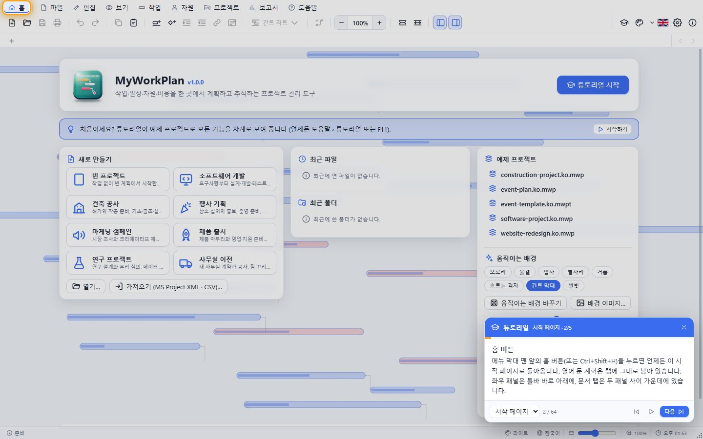
3. 새 프로젝트 만들기
빈 프로젝트나 소프트웨어 개발·건설·행사·마케팅·제품 출시·연구·사무실 이전 템플릿으로 시작합니다. 템플릿에는 단계, 작업, 연결, 마일스톤, 자원이 들어 있습니다.

4. 최근 파일과 폴더
최근에 연 파일 10개와 폴더 10개가 기억됩니다. ✕로 하나씩, "모두 지우기"로 한 번에 지웁니다. 파일 메뉴의 최근 파일·최근 폴더에서도 관리합니다.
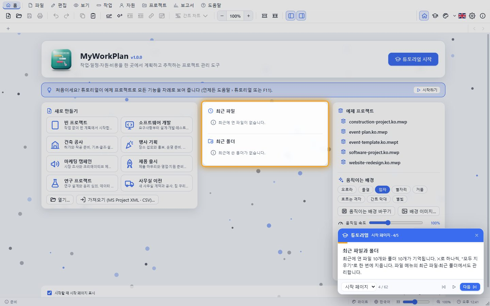
5. 움직이는 배경
시작 페이지의 배경은 계속 움직입니다. 오로라·물결·별자리·간트 막대·반딧불·은하 나선 등 20가지 중에서 고르거나 "움직이는 배경 바꾸기"로 무작위로 바꾸고, 속도도 조절합니다. 프로그램을 시작할 때마다 다른 배경이 무작위로 골라지고, 시작 페이지가 열려 있으면 정한 시간(기본 30초)마다 저절로 다른 배경으로 바뀝니다. 이미지를 배경으로 쓸 수도 있습니다.
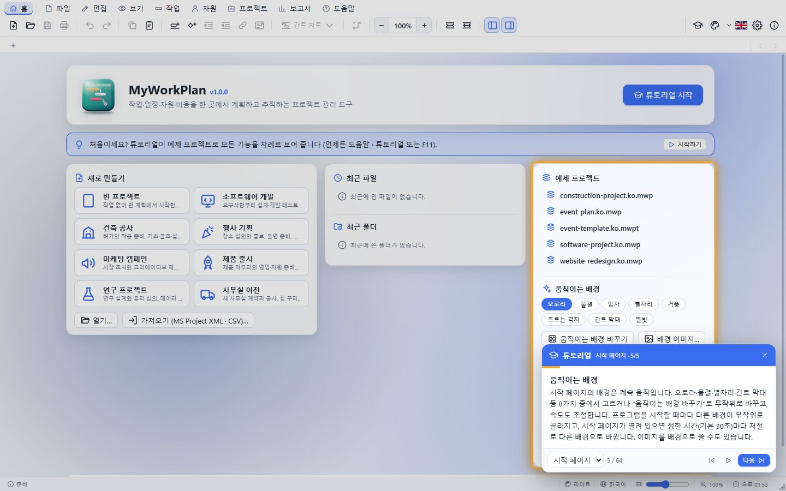
2. 계획 만들기
6. 예제 프로젝트
웹사이트 리뉴얼 예제를 열었습니다. 왼쪽은 작업 표, 오른쪽은 간트 차트입니다. 요약 작업은 검은 괄호, 마일스톤은 마름모, 빨간 막대는 주 공정 작업입니다.

7. 화면 구성
위에서부터 메뉴, 툴바(한 줄), 프로젝트 탭이 있고, 왼쪽 도구 모음·가운데 보기·오른쪽 속성 패널·아래 상태 표시줄로 되어 있습니다. 패널 사이의 구분자를 끌어 너비를 바꿉니다.

8. 작업 추가
툴바의 "작업 삽입"(Insert 키)은 선택한 행 위에 새 작업을 넣습니다. 표 맨 아래의 빈 행에 이름을 바로 입력해도 됩니다.

9. 기간 입력
기간 칸에 5d(5일), 3w(3주), 4h(4시간), 2ed(경과 2일)처럼 입력합니다. 셀을 두 번 클릭하거나 F2·Enter로 편집하고, 날짜는 달력에 맞춰 자동으로 계산됩니다.

10. 마일스톤
기간이 0인 작업이 마일스톤(마름모)입니다. 단계가 끝나는 지점이나 중요한 날짜를 표시합니다.

11. 개요 (요약 작업)
들여쓰기(Alt+Shift+→)하면 위 작업의 하위 작업이 되고, 위 작업은 요약 작업이 되어 기간·비용·완료율을 자동으로 합칩니다. 내어쓰기(Alt+Shift+←)로 되돌립니다.

12. 접고 펼치기
요약 작업 이름 앞의 삼각형으로 하위 작업을 접고 펼칩니다. 보기 메뉴에서 모두 접기·모두 펼치기도 할 수 있습니다.

13. 작업 연결
작업을 둘 이상 선택하고 "작업 연결"(Ctrl+F2)을 누르면 완료-시작(FS)으로 이어집니다. 선행 작업이 늦어지면 후속 작업도 자동으로 밀립니다.

14. 막대 끌기
간트 막대를 끌면 시작 날짜가 바뀌고, 오른쪽 끝을 끌면 기간이, 왼쪽의 진행 손잡이를 끌면 완료율이 바뀝니다. 막대를 위아래로 끌어 다른 막대에 놓으면 연결됩니다.

15. 실행 취소·다시 실행
모든 편집은 Ctrl+Z로 되돌리고 Ctrl+Y로 다시 실행합니다. 툴바 버튼의 툴팁에 무엇을 되돌리는지 표시됩니다.

16. 복사와 붙여넣기
Ctrl+C·Ctrl+X·Ctrl+V로 작업을 복사·이동합니다. 엑셀이나 메모장에서 복사한 목록(들여쓰기 = 수준, 탭 뒤에 기간)도 작업으로 붙여넣어집니다.

3. 일정 잡기
17. 작업 정보
작업을 두 번 클릭(Shift+F2)하면 작업 정보 창이 열립니다. 일반·선행 작업·자원·고급·메모·사용자 지정 필드 탭에서 모든 속성을 고칩니다. 창은 주 창 밖으로 옮길 수 있습니다.

18. 제약 조건과 마감일
고급 탭에서 "다음 날짜 이후에 시작" 같은 제약 조건, 마감일, 작업 유형(단위·기간·작업량 고정), 노력 기반, 작업 달력을 정합니다. 마감일을 넘기면 표시기에 경고가 뜹니다.

19. 주 공정과 여유 시간
빨간 막대는 여유 시간이 없어 늦어지면 프로젝트 전체가 늦어지는 주 공정 작업입니다. 가는 선은 다른 작업을 늦추지 않고 미룰 수 있는 자유 여유 시간입니다.

20. 주 공정 찾기 (토글)
툴바의 주 공정 찾기 버튼(Ctrl+Shift+P, 프로젝트 메뉴에도 있음)을 누르면 일정을 앞에서 뒤로(가장 빠른 날짜) 그리고 뒤에서 앞으로(가장 늦은 날짜) 계산해 여유 시간이 없는 작업을 찾고, 시작부터 끝까지 이어지는 주 공정 경로를 표시합니다. 주 공정 작업과 연결선은 빨갛게 강조되고 나머지는 흐려지며, 상태 표시줄에 작업 수와 경로가 나옵니다. 한 번 더 누르면 꺼집니다.
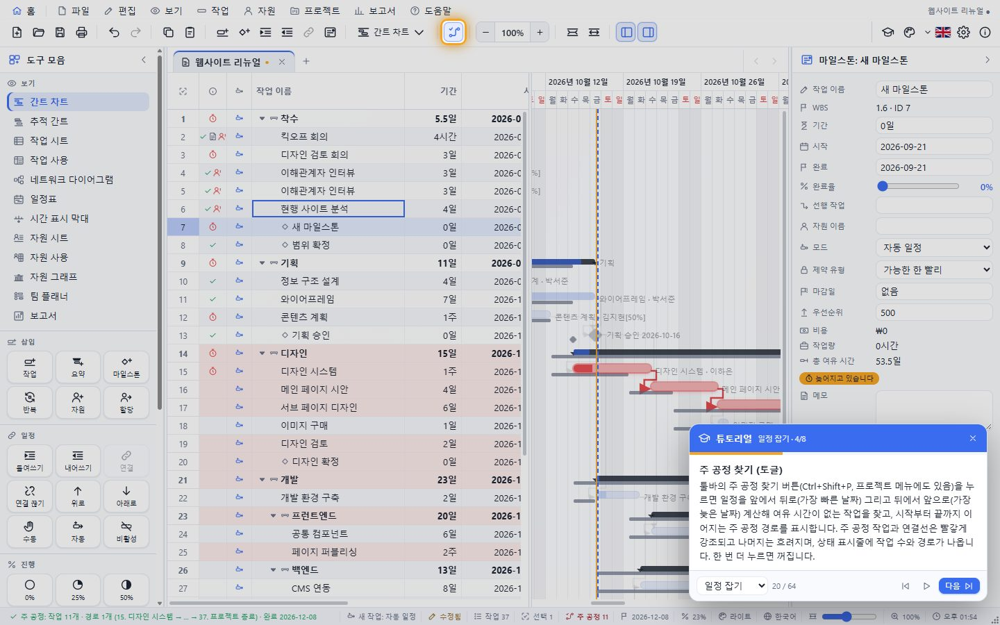
21. 연결 유형과 지연
연결선을 두 번 클릭하면 유형(FS·SS·FF·SF)과 지연을 바꿉니다. 지연은 2d, 앞당김은 -1d, 비율은 50%처럼 씁니다. 연결선을 오른쪽 클릭하면 바로 바꾸는 메뉴가 나옵니다.

22. 작업 시간 변경
프로젝트 달력의 작업 요일과 시간, 휴일·특근 같은 예외를 정합니다. 표준·24시간·야간 근무 달력이 있고 새 달력을 만들어 작업이나 자원에 지정할 수 있습니다.

23. 반복 작업
주간 회의처럼 반복되는 작업을 매일·매주·매월·매년 간격과 횟수(또는 끝 날짜)로 한 번에 만듭니다.

24. 프로젝트 정보
시작 날짜(또는 완료 날짜 기준 일정), 프로젝트 달력, 통화, 상태 날짜, 통계(현재·기준·실제·남음)와 속성을 봅니다.

4. 자원과 비용
25. 자원 시트
사람·장비(작업 자원), 재료, 비용 자원을 등록하고 최대 단위, 단가, 사용당 비용, 달력을 정합니다. 초과 할당된 자원은 빨갛게 표시됩니다.

26. 자원 할당
작업을 선택하고 자원 할당(Alt+F10)을 엽니다. 체크하고 단위(50% = 반나절)를 정하면 작업량과 비용이 계산됩니다. 새 자원을 바로 추가할 수도 있습니다.

27. 자원 사용
자원마다 할당된 작업과 날짜별 작업 시간을 봅니다. 할 수 있는 양을 넘는 칸은 빨간색입니다.

28. 자원 그래프
한 자원의 날짜별 작업량을 막대로, 사용 가능한 양을 선으로 보여 줍니다. 선을 넘는 빨간 부분이 초과 할당입니다.

29. 자원 평준화
초과 할당을 없애려면 평준화합니다. 우선순위가 낮은 작업부터 뒤로 미뤄 겹치지 않게 합니다. 평준화 지우기로 원래대로 돌립니다.

30. 팀 플래너
사람마다 한 줄에 작업이 보입니다. 작업 블록을 다른 사람의 줄로 끌면 담당자가 바뀝니다. 아래 줄은 할당되지 않은 작업입니다.

5. 진행 추적
31. 기준 계획
계획을 확정하면 기준 계획을 저장합니다(최대 11개). 나중에 실제 일정과 비교해 차이를 봅니다.

32. 진행률 입력
작업을 고르고 0%·25%·50%·75%·100% 버튼을 누르면 실제 시작·완료가 자동으로 기록됩니다. 막대 안의 어두운 부분이 진행률입니다.

33. 프로젝트 업데이트
상태 날짜까지 일정대로 진행된 것으로 한 번에 표시하거나, 늦어진 작업의 남은 부분을 그 뒤로 다시 잡습니다.

34. 추적 간트
위 막대는 현재 일정, 아래 회색 막대는 기준 계획입니다. 진행선은 상태 날짜에서 각 작업이 어디까지 했는지 이어 보여 줍니다.

6. 보기
35. 보기 전환
툴바의 보기 버튼이나 왼쪽 도구 모음에서 12가지 보기로 바꿉니다: 간트, 추적 간트, 작업 시트, 작업 사용, 네트워크, 일정표, 시간 표시 막대, 자원 시트·사용·그래프, 팀 플래너, 보고서.

36. 하위 메뉴로 묶인 긴 메뉴
항목이 많은 메뉴는 주제별 하위 메뉴로 묶여 있습니다. 오른쪽에 ›가 있는 항목을 누르거나 → 키를 누르면 그 옆에 하위 메뉴가 열립니다 (예: 보기 › 보기 전환 › 네트워크 다이어그램).
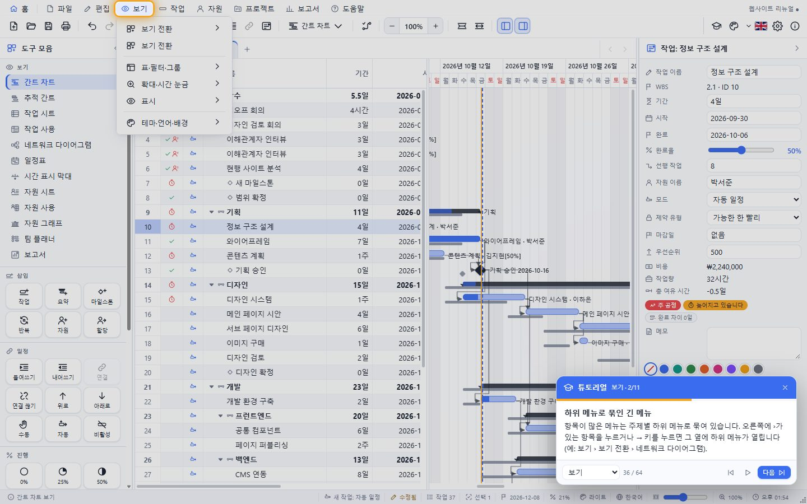
37. 네트워크 다이어그램
작업을 상자로, 연결을 화살표로 보여 줍니다. 끌어서 이동하고 Ctrl+휠로 확대합니다. 빨간 상자는 주 공정입니다.

38. 일정표
달력에 작업이 걸쳐 있는 날을 막대로 보여 줍니다. 화살표나 마우스 휠로 달을 넘깁니다.

39. 시간 표시 막대
프로젝트 전체를 한 줄에 요약합니다: 단계, 마일스톤, "시간 표시 막대에 추가"한 작업. 보고용으로 좋습니다.

40. 작업 사용
작업마다 할당된 자원과 날짜별 작업 시간을 봅니다. 시간 눈금을 확대/축소하면 일·주·월 단위로 바뀝니다.

41. 표 바꾸기
입력·일정·비용·작업량·추적·차이·기준 계획·요약·제약 조건 표로 열 묶음을 바꿉니다. 열 머리글을 오른쪽 클릭하면 열을 숨기거나 더하고, 경계를 끌어 너비를 바꿉니다.

42. 필터·그룹·정렬
주 공정, 늦은 작업, 마일스톤 같은 필터와 자원·상태별 그룹, 정렬을 고릅니다. "강조 표시"를 켜면 모든 작업을 보이면서 해당 작업만 칠합니다.

43. 찾기·바꾸기·이동
Ctrl+F로 찾고 Ctrl+H로 바꾸며 Ctrl+G로 작업 ID나 날짜로 이동합니다. 날짜 범위 필터도 여기에 있습니다.

44. 확대와 시간 눈금
Ctrl+마우스 휠로 확대/축소하고, 차트 위에서는 시간 눈금(일·주·월·분기)이 바뀝니다. 차트는 끌거나 Ctrl+끌기로 이동합니다. 상태 표시줄의 슬라이더로도 바꿉니다.

45. 오른쪽 클릭 메뉴
작업 행, 막대, 연결선, 자원, 열 머리글, 차트 빈 곳, 탭, 입력 칸마다 다른 메뉴가 열립니다. 메뉴는 창 밖까지 펼쳐지고 모든 항목에 아이콘이 있습니다.

7. 보고서
46. 보고서
프로젝트 개요(완료율, 단계별 진행, 다가오는 마일스톤)를 비롯해 비용·작업량·번다운·주 공정·늦은 작업·다가오는 작업·마일스톤·자원 보고서가 있습니다.

47. 비용 보고서
기준 계획·현재 일정·실제의 누적 비용 곡선과 단계별·자원별 비용입니다. "보고서 복사"로 내용을 다른 프로그램에 붙여넣습니다.

48. 보고서 내보내기
보고서 머리글의 보고서 내보내기 단추(또는 보고서 메뉴)에서 HTML·Markdown·Word(.docx)·PDF 중 하나를 고르면 지금 보고서가 그 형식의 파일로 저장됩니다. 차트는 그림으로, 숫자는 표로 들어갑니다.
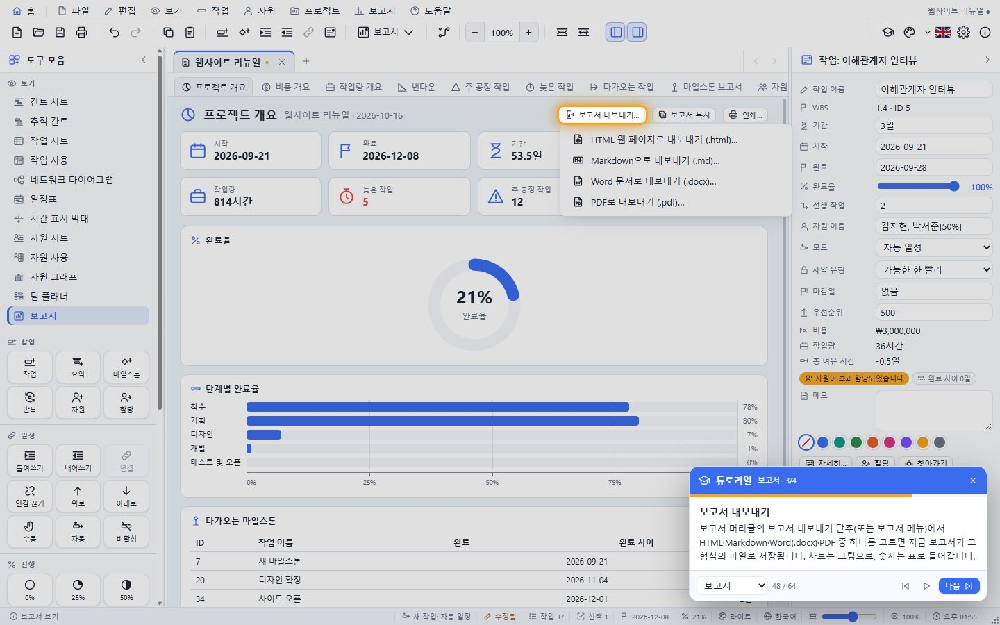
49. 번다운
남은 작업량이 어떻게 줄어드는지 계획과 실제를 비교합니다.

8. 파일과 인쇄
50. 파일 메뉴
저장(.mwp), 템플릿으로 저장(.mwpt), MS Project XML·CSV 가져오기와 내보내기, 간트 차트 그림(PNG) 내보내기, 최근 파일·폴더 관리, 인쇄가 있습니다.

51. 인쇄와 미리 보기
전체 프로젝트, 현재 보기, 사용자 지정(ID 범위·날짜 범위·선택한 작업) 중에서 고르고, 용지·방향·여백·배율·머리글·바닥글을 바꾸면서 미리 본 뒤 바로 인쇄합니다.

52. 간트 차트를 이미지로
파일 › 가져오기·내보내기 › 이미지로 내보내기에서 PNG·JPEG·WebP·BMP·TIFF·SVG 중 형식을 고르고, 배경을 투명하게 할지, 표와 차트 중 무엇을 넣을지, 배율과 품질을 정합니다. 투명 배경 이미지는 문서나 슬라이드 위에 바로 겹쳐 쓸 수 있습니다.
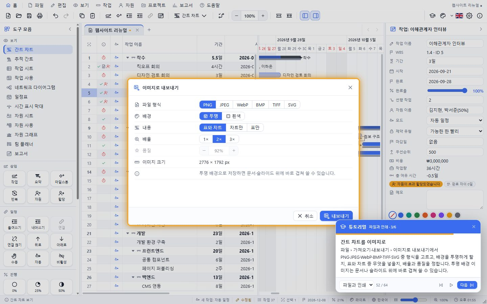
53. 데이터베이스에 저장하기
설정 › 데이터베이스에서 SQLite3·MariaDB·MySQL·PostgreSQL 중 하나를 고르고 파일 또는 서버·포트·DB 이름·사용자를 입력한 뒤 연결 시험을 누릅니다. 그다음부터 저장(Ctrl+S)은 파일과 데이터베이스에 함께 저장하고, 파일 › 데이터베이스에서 열기로 꺼내 씁니다. 비밀번호는 저장하도록 켰을 때만 남습니다.
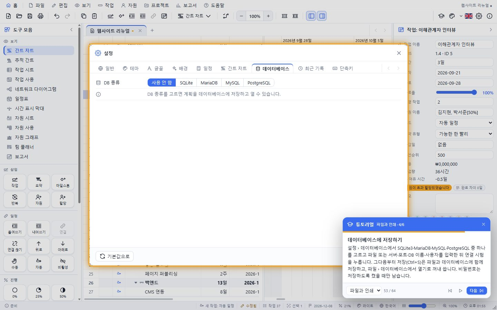
54. 최근 파일 관리
최근 파일과 최근 폴더를 탭으로 나눠 보여 줍니다. 열거나, 하나씩 지우거나, 모두 지웁니다. 없어진 파일은 "없음"으로 표시됩니다.

55. 끌어다 놓기
탐색기에서 .mwp·.mwpt·XML·CSV 파일을 창으로 끌어오면 열리고, 이미지는 배경이 되며, 텍스트는 작업 목록이 됩니다.

9. 꾸미기
56. 테마
테마 버튼은 누를 때마다 무작위로 다른 테마를 고릅니다. 옆의 ▾는 다크 20개와 라이트 20개를 두 줄로 보여 주고, 사용자 정의 테마는 설정의 테마 탭에서 색을 직접 고칩니다.

57. 언어
국기 버튼으로 한국어와 영어를 바꿉니다. 한국어일 때는 영국 국기, 영어일 때는 태극기가 보입니다.

58. 패널 접기
도구 모음과 속성 패널은 접으면 아이콘과 제목만 남은 좁은 줄이 되고, 맨 위의 펼치기 버튼으로 다시 엽니다. 패널 사이 구분자를 끌어 너비를 바꿉니다.

59. 설정
일반·테마·글꼴(시스템에 설치된 모든 글꼴, 크기, 굵기, 기울임)·배경·일정·간트 차트·최근 기록·단축키 탭이 있습니다. 설정은 저장되어 다음 실행 때 다시 쓰입니다.

60. 상태 표시줄
명령 결과, 새 작업 모드, 저장 상태, 작업 수, 선택, 완료 날짜, 완료율, 충돌, 테마, 언어, 시간 눈금, 확대 비율, 시계를 보여 줍니다. 오른쪽 아래 모서리를 끌어 창 크기를 바꿉니다.

10. 도움말
61. 단축키
설정 › 단축키에 모든 단축키가 있습니다. 메뉴에도 단축키가 함께 표시됩니다.

62. 프로그램 정보
툴바의 ⓘ 버튼은 버전, 빌드 정보, 제작자(SHKWON, knix008@naver.com)를 보여 줍니다. 오류가 나면 자세한 내용이 팝업으로 뜨고 그대로 복사할 수 있습니다.
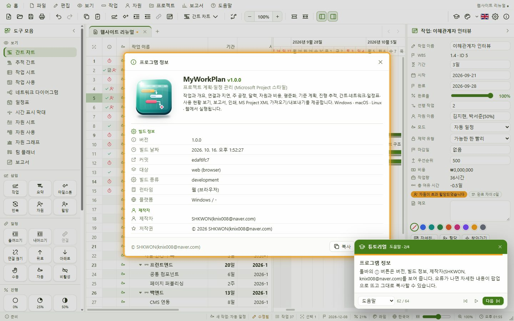
63. 튜토리얼 문서 읽기
이 튜토리얼의 모든 단계를 화면과 함께 정리한 문서를 프로그램 안에서 읽을 수 있습니다. 홈 화면의 도움말 › 튜토리얼 문서나 도움말 메뉴에서 엽니다. 위쪽 막대에서 장으로 이동하고, 한국어/English를 바꾸고, 튜토리얼을 바로 시작하거나 브라우저로 열 수 있습니다. 홈 버튼으로 돌아갑니다.
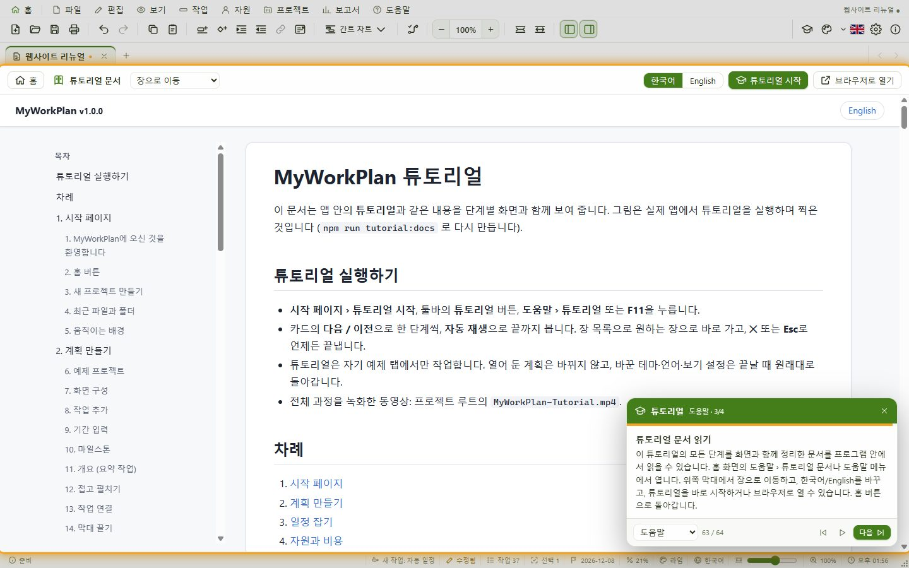
64. 다 둘러봤습니다
튜토리얼은 언제든 도움말 › 튜토리얼이나 툴바의 학사모 버튼(F11)으로 다시 볼 수 있습니다. 자세한 내용은 도움말 › 사용 설명서를 보세요.
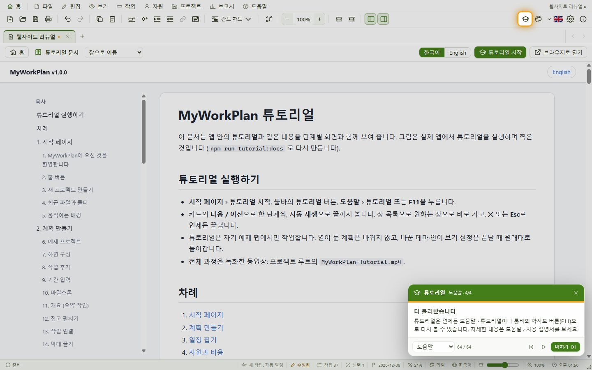